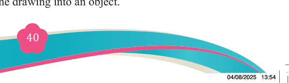
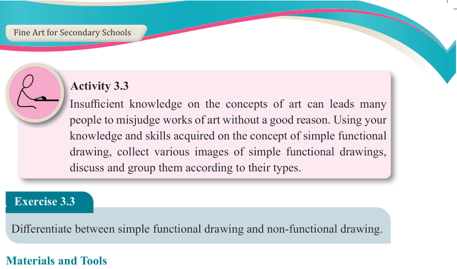
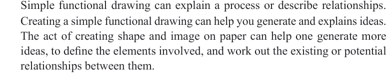

Activity 3.3
Insufficient knowledge on the concepts of art can leads many people to misjudge works of art without a good reason. Using your knowledge and skills acquired on the concept of simple functional drawing, collect various images of simple functional drawings, discuss and group them according to their types.
Exercise 3.3
Differentiate between simple functional drawing and non-functional drawing.
Materials and Tools
Simple functional drawing involves materials and tools that may differ from those
typically used in traditional drawing of art forms. Students should not be discouraged
from doing simple functional drawing due to this difference. If necessary, use readily available materials from your environment.
Simple functional drawing materials include pencils, graphite sticks, markers, fine line pens, felt tips, charcoal, chalk, oil pastels, drawing ink, and erasers. It is also important to consider the type of surfaces to draw on in creating interesting textures and backgrounds in your drawings.
If there is a shortage or difficulties in getting some materials in certain places, students are advised to use any local materials available in their environment.
Significance of simple functional drawing
Simple functional drawing is significant in the following ways:
(a) Drawing as an explanation
Simple functional drawing can explain a process or describe relationships.
Creating a simple functional drawing can help you generate and explains ideas.
The act of creating shape and image on paper can help one generate more ideas, to define the elements involved, and work out the existing or potential relationships between them.
(b) Drawing as a definition
Simple functional drawing deals with the concept of perspectives, positioning
and creating images of objects through simple drawings. Sketches and drawings
are good process for learners. A drawing of an image of a school bag, for example, acts and projects the drawing into an object.